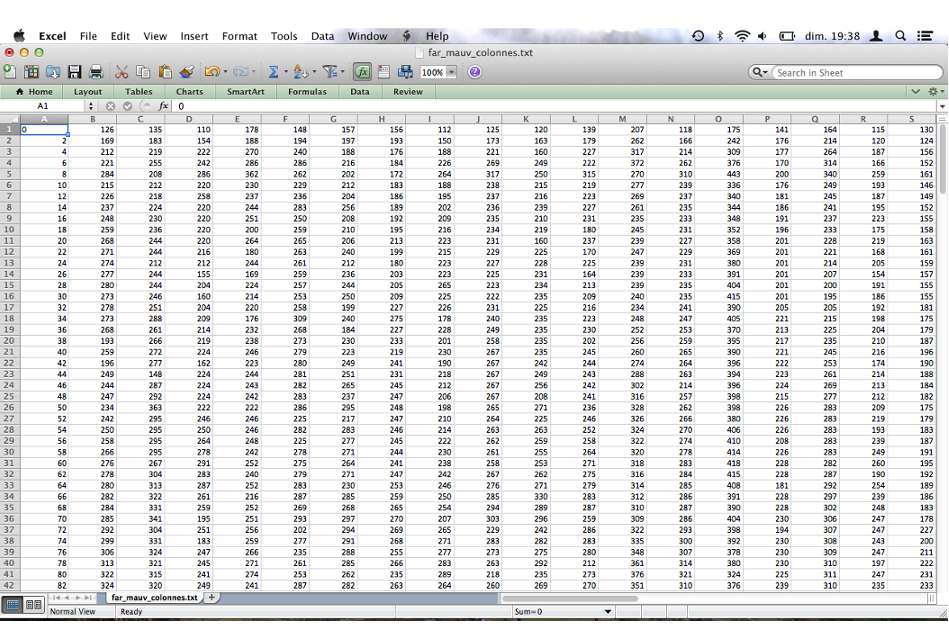
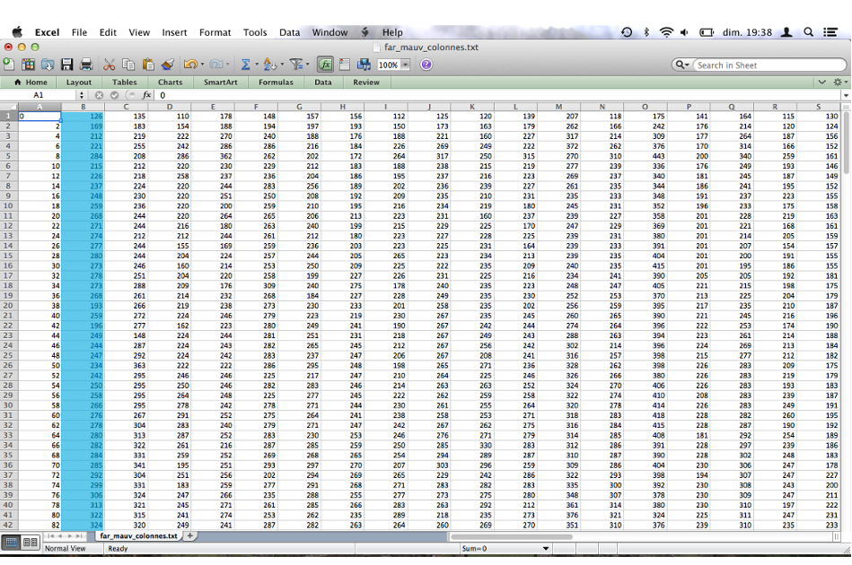
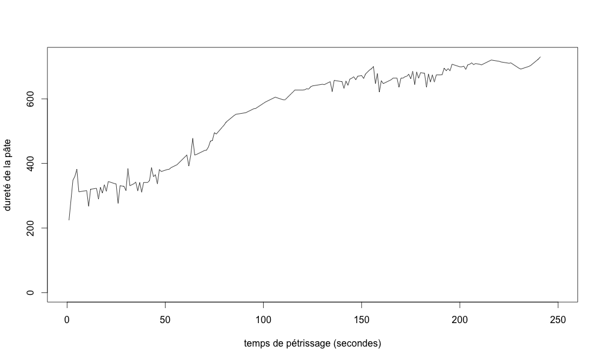
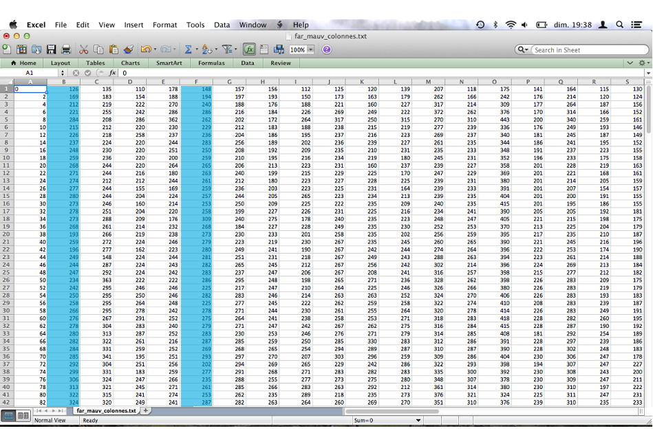
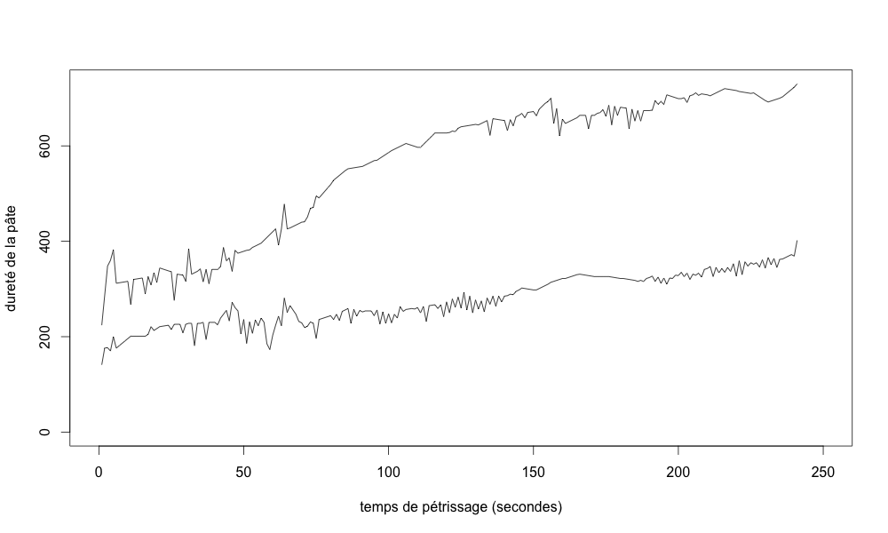
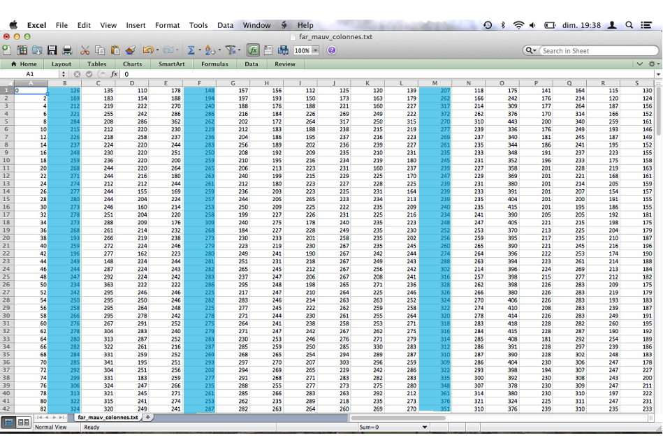
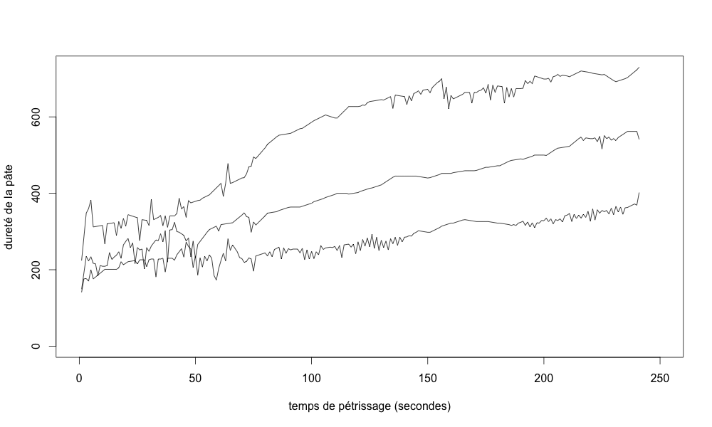
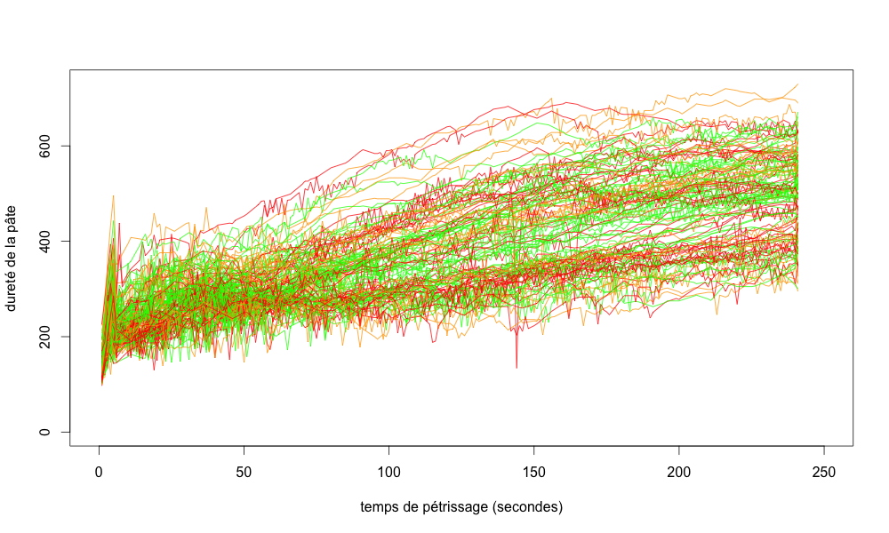
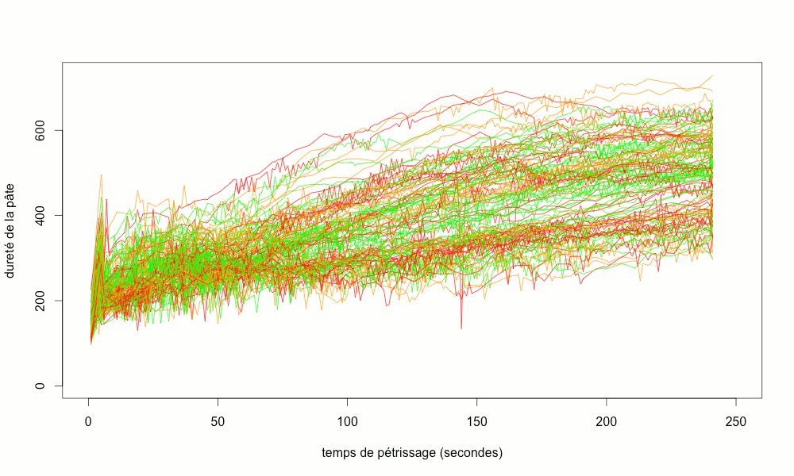

Comment prédire la qualité des cookies ?
Acquisition des données durant le process de fabrication des cookies
La qualité du cookie est liée à la qualité du pétrissage
Pour chaque fournée, on mesure la dureté de la pâte durant le pétrissage
on mesure la dureté toutes les 2" pendant 480 secondes

Quelques exemples de courbes de dureté


Quelques exemples de courbes de dureté


Quelques exemples de courbes de dureté


Après cuisson les cookies sont goutés et jugés
Doit-on cuire et gouter tous les cookies ?
Il devient impossible de traiter ces données "manuellement"
Besoin de Mathématiques et d'informatique
Besoin de Mathématiques et d'informatique
Besoin de Mathématiques et d'informatique
Traitement informatique et résultats

